Evaluación Final — Sartorius Cell Instance Segmentation#
5 modelos | K-Fold (k=5) | Validación + Test#
Modelos evaluados:
Modelo |
Checkpoint |
Plataforma |
|---|---|---|
Cellpose 2.0 |
|
Local |
U-Net++ |
|
Colab |
HoVer-Net |
|
Kaggle |
Mask R-CNN |
|
Kaggle |
SAM |
|
Colab |
Orden de ejecución:
Cargar preprocesamiento → 2. K-Fold con mejor hparams → 3. Métricas completas → 4. Visualizaciones
1. Librerías#
import os, json, copy, warnings, random
from pathlib import Path
import numpy as np
import pandas as pd
import matplotlib.pyplot as plt
import matplotlib.patches as mpatches
import seaborn as sns
import joblib
import cv2
from PIL import Image
from tqdm.auto import tqdm
warnings.filterwarnings('ignore')
import torch
import torch.nn as nn
from torch.utils.data import Dataset,DataLoader
from sklearn.metrics import (
roc_auc_score, balanced_accuracy_score,
roc_curve, precision_recall_curve, auc
)
from scipy.spatial.distance import directed_hausdorff
from sklearn.model_selection import ParameterGrid
import segmentation_models_pytorch as smp
from segment_anything import sam_model_registry
SEED = 42
random.seed(SEED); np.random.seed(SEED); torch.manual_seed(SEED)
DEVICE = torch.device('cuda' if torch.cuda.is_available() else 'cpu')
print(f'Device: {DEVICE}')
if torch.cuda.is_available():
print(f'GPU : {torch.cuda.get_device_name(0)}')
c:\Users\Hp\miniconda3\envs\ml_venv\lib\site-packages\tqdm\auto.py:21: TqdmWarning: IProgress not found. Please update jupyter and ipywidgets. See https://ipywidgets.readthedocs.io/en/stable/user_install.html
from .autonotebook import tqdm as notebook_tqdm
Device: cuda
GPU : NVIDIA GeForce RTX 4050 Laptop GPU
2. Rutas y configuración#
# ── Ajustar según tu entorno ─────────────────────────────────
BASE_DIR = Path('.')
CKPT_DIR = BASE_DIR / 'checkpoints'
CELLPOSE_DIR = BASE_DIR / 'cellpose_results'
EXPORT_FILE = BASE_DIR / 'preprocessing_exports' / 'preprocessing_data.joblib'
OUTPUT_DIR = BASE_DIR / 'evaluation_results'
OUTPUT_DIR.mkdir(exist_ok=True)
DATA_DIR = Path(r'C:\Users\Hp\Documents\Deep_learning\Imagenes\sartorius-cell-instance-segmentation')
TRAIN_DIR = DATA_DIR / 'train'
# Checkpoints por modelo
CKPTS = {
'unetpp' : CKPT_DIR / 'unetpp_best.pth',
'hovernet': CKPT_DIR / 'hovernet_best.pth',
'maskrcnn': CKPT_DIR / 'maskrcnn_best.pth',
'sam' : CKPT_DIR / 'sam_best.pth',
'sam_pretrained': CKPT_DIR / 'sam_vit_b_01ec64.pth',
'cellpose': CELLPOSE_DIR / 'cellpose_best_weights.pth',
}
# Verificar disponibilidad
print('Estado de checkpoints:')
for name, path in CKPTS.items():
exists = path.exists()
size = f'{path.stat().st_size/1e6:.1f} MB' if exists else 'NO ENCONTRADO'
print(f' {name:<12}: {"OK" if exists else "FALTA"} | {size}')
Estado de checkpoints:
unetpp : OK | 55.1 MB
hovernet : OK | 391.3 MB
maskrcnn : OK | 176.3 MB
sam : OK | 375.1 MB
sam_pretrained: OK | 375.0 MB
cellpose : OK | 26.6 MB
3. Cargar pipeline de preprocesamiento#
import sys
sys.path.insert(0, str(BASE_DIR))
from sartorius_utils import SartoriusDataset as SartoriusDatasetGeneral, preprocess, rle_decode
data = joblib.load(EXPORT_FILE)
df_img = data['df_img']
df_train_base = data['df_train_base']
df_val = data['df_val']
df_test = data['df_test']
folds = data['folds']
config = data['config']
IMG_SIZE = config['IMG_SIZE']
print(f'df_train_base : {df_train_base.shape}')
print(f'df_val : {df_val.shape}')
print(f'df_test : {df_test.shape}')
print(f'folds K-Fold : {len(folds)}')
print(f'IMG_SIZE : {IMG_SIZE}')
df_train_base : (424, 6)
df_val : (91, 6)
df_test : (91, 6)
folds K-Fold : 5
IMG_SIZE : (512, 512)
4. Funciones de métricas completas#
def iou_score(pred, true, eps=1e-6):
pred = pred.bool(); true = true.bool()
return (((pred & true).float().sum() + eps) /
((pred | true).float().sum() + eps)).item()
def dice_score(pred, true, eps=1e-6):
pred = pred.bool().float(); true = true.bool().float()
return ((2*(pred*true).sum() + eps) /
(pred.sum() + true.sum() + eps)).item()
def precision_score_fn(pred, true, eps=1e-6):
tp = (pred.bool() & true.bool()).float().sum()
fp = (pred.bool() & ~true.bool()).float().sum()
return ((tp + eps) / (tp + fp + eps)).item()
def recall_score_fn(pred, true, eps=1e-6):
tp = (pred.bool() & true.bool()).float().sum()
fn = (~pred.bool() & true.bool()).float().sum()
return ((tp + eps) / (tp + fn + eps)).item()
def auc_score(pred_prob, true):
y_true = true.bool().cpu().numpy().flatten().astype(int)
y_prob = pred_prob.cpu().numpy().flatten()
if len(np.unique(y_true)) < 2:
return float('nan')
return float(roc_auc_score(y_true, y_prob))
def hausdorff_distance(pred, true):
pred_pts = np.argwhere(pred.bool().cpu().numpy())
true_pts = np.argwhere(true.bool().cpu().numpy())
if len(pred_pts) == 0 or len(true_pts) == 0:
return float('inf')
return float(max(
directed_hausdorff(pred_pts, true_pts)[0],
directed_hausdorff(true_pts, pred_pts)[0]
))
def balanced_accuracy_fn(pred, true):
return float(balanced_accuracy_score(
true.bool().cpu().numpy().flatten().astype(int),
pred.bool().cpu().numpy().flatten().astype(int)
))
def compute_all_metrics(pred_prob, true_bin, threshold=0.5):
"""
Calcula las 7 metricas para un par pred/true.
pred_prob : tensor (H,W) probabilidades continuas
true_bin : tensor (H,W) bool ground truth
"""
pred_bin = (pred_prob > threshold)
return {
'iou' : iou_score(pred_bin, true_bin),
'dice' : dice_score(pred_bin, true_bin),
'precision' : precision_score_fn(pred_bin, true_bin),
'recall' : recall_score_fn(pred_bin, true_bin),
'auc' : auc_score(pred_prob, true_bin),
'hausdorff' : hausdorff_distance(pred_bin, true_bin),
'balanced_accuracy': balanced_accuracy_fn(pred_bin, true_bin),
'pred_prob' : pred_prob.cpu().numpy(),
'pred_bin' : pred_bin.cpu().numpy(),
'true_bin' : true_bin.cpu().numpy(),
}
def aggregate_metrics(results_list):
"""Media y std de cada metrica sobre una lista de dicts."""
keys = ['iou','dice','precision','recall','auc','hausdorff','balanced_accuracy']
agg = {}
for k in keys:
vals = [r[k] for r in results_list
if r[k] != float('inf') and not np.isnan(r[k])]
agg[k] = {'mean': float(np.mean(vals)) if vals else np.nan,
'std' : float(np.std(vals)) if vals else np.nan,
'vals': vals}
return agg
print('Métricas definidas OK')
Métricas definidas OK
5. Definición de arquitecturas para cargar checkpoints#
# ── U-Net++ ──────────────────────────────────────────────────
def build_unetpp(encoder_name='efficientnet-b3'):
return smp.UnetPlusPlus(
encoder_name=encoder_name,
encoder_weights=None,
in_channels=3,
classes=1,
activation=None
)
# ── HoVer-Net ─────────────────────────────────────────────────
import math
class HoVerNet(nn.Module):
def __init__(self, encoder_name='resnet50', num_classes=3):
super().__init__()
self.np_branch = smp.Unet(encoder_name=encoder_name,
encoder_weights=None, in_channels=3, classes=1, activation=None)
self.hv_branch = smp.Unet(encoder_name=encoder_name,
encoder_weights=None, in_channels=3, classes=2, activation=None)
self.nc_branch = smp.Unet(encoder_name=encoder_name,
encoder_weights=None, in_channels=3, classes=num_classes, activation=None)
def forward(self, x):
return self.np_branch(x), self.hv_branch(x), self.nc_branch(x)
# ── Mask R-CNN ────────────────────────────────────────────────
from torchvision.models.detection import maskrcnn_resnet50_fpn
from torchvision.models.detection.faster_rcnn import FastRCNNPredictor
from torchvision.models.detection.mask_rcnn import MaskRCNNPredictor
# Asegúrate de pasar el num_classes correcto dinámicamente o que coincida con el de entrenamiento
def build_maskrcnn_eval(num_classes=4, cfg=None):
model = maskrcnn_resnet50_fpn(weights=None)
in_f = model.roi_heads.box_predictor.cls_score.in_features
model.roi_heads.box_predictor = FastRCNNPredictor(in_f, num_classes)
in_fm = model.roi_heads.mask_predictor.conv5_mask.in_channels
model.roi_heads.mask_predictor = MaskRCNNPredictor(in_fm, 256, num_classes)
if cfg is not None:
model.roi_heads.score_thresh = cfg.get('score_thresh', 0.2)
model.roi_heads.nms_thresh = cfg.get('nms_thresh', 0.5)
else:
model.roi_heads.score_thresh = 0.2
model.roi_heads.nms_thresh = 0.3
model.roi_heads.detections_per_img = 600
return model
def load_model(name, device=DEVICE):
path = CKPTS[name]
if not path.exists():
print(f' SKIP {name}: checkpoint no encontrado')
return None
if name == 'unetpp':
model = build_unetpp()
state = torch.load(path, map_location='cpu')
if 'model_state_dict' in state: state = state['model_state_dict']
if 'state' in state: state = state['state'] # ← formato CheckpointManager
model.load_state_dict(state)
model.eval().to(device)
elif name == 'hovernet':
model = HoVerNet()
state = torch.load(path, map_location='cpu')
if 'model_state_dict' in state: state = state['model_state_dict']
if 'state' in state: state = state['state']
model.load_state_dict(state)
model.eval().to(device)
elif name == 'maskrcnn':
model = build_maskrcnn_eval(num_classes=4)
state = torch.load(path, map_location='cpu')
if 'state' in state: state = state['state']
model.load_state_dict(state)
model.eval().to(device)
elif name == 'sam':
sam_pretrained = CKPTS['sam_pretrained']
sam_finetuned = CKPTS['sam']
if not sam_pretrained.exists():
print(f' SKIP SAM: checkpoint pretrained no encontrado en {sam_pretrained}')
return None
# Cargar arquitectura base
model = sam_model_registry['vit_b'](checkpoint=str(sam_pretrained))
# Cargar pesos fine-tuneados del decoder si existen
if sam_finetuned.exists():
state = torch.load(sam_finetuned, map_location='cpu')
if 'state' in state: state = state['state']
# SAM fine-tuning solo entrena mask_decoder + prompt_encoder
# strict=False para ignorar keys del image_encoder congelado
model.load_state_dict(state, strict=False)
print(f' Decoder fine-tuneado cargado: {sam_finetuned.name}')
else:
print(f' AVISO: usando SAM sin fine-tuning (solo pretrained)')
model.eval().to(device)
elif name == 'cellpose':
from cellpose import models as cp_models
hparams_path = CELLPOSE_DIR / 'best_hparams.json'
if not hparams_path.exists():
print(f' SKIP cellpose: best_hparams.json no encontrado en {hparams_path}')
return None, {}
with open(hparams_path) as f:
hparams = json.load(f)
model = cp_models.CellposeModel(
gpu=torch.cuda.is_available(),
model_type=hparams.get('model_type', 'cyto2')
)
if path.exists():
model.net.load_state_dict(torch.load(path, map_location='cpu'))
print(f' Cargado: {path.name} ({path.stat().st_size/1e6:.1f} MB)')
else:
print(f' AVISO: pesos no encontrados — usando modelo base {hparams.get("model_type")}')
return model, hparams # retorna tupla — distinto al resto de modelos
sz = path.stat().st_size / 1e6
print(f' Cargado: {path.name} ({sz:.1f} MB)')
return model
print('Arquitecturas definidas OK')
Arquitecturas definidas OK
6. Collate functions y DataLoaders#
CELL_TYPE_MAP = {
'shsy5y': 1,
'astro': 2,
'cort': 3
}
class SartoriusDatasetMRCNN(Dataset):
"""Dataset específico para Mask R-CNN — mismo que se usó en entrenamiento."""
def __init__(self, df, img_dir, img_size=512, augment=False):
self.df = df
self.img_dir = Path(img_dir)
self.img_size = img_size
self.augment = augment
self.ids = df['id_imagen'].unique().tolist()
def __len__(self):
return len(self.ids)
def __getitem__(self, idx):
img_id = self.ids[idx]
rows = self.df[self.df['id_imagen'] == img_id]
img = np.array(
Image.open(self.img_dir / f'{img_id}.png').convert('RGB')
)
h0, w0 = img.shape[:2]
img = cv2.resize(img, self.img_size)
img_tensor = torch.from_numpy(
img.transpose(2, 0, 1)
).float() / 255.0
masks, boxes, labels = [], [], []
for _, row in rows.iterrows():
for rle in row['rles']:
mask = rle_decode(rle, shape=(h0, w0))
mask = cv2.resize(
mask,
self.img_size,
interpolation=cv2.INTER_NEAREST
)
if mask.sum() == 0:
continue
masks.append(mask)
ys, xs = np.where(mask)
boxes.append([
xs.min(),
ys.min(),
xs.max(),
ys.max()
])
labels.append(
CELL_TYPE_MAP.get(row['cell_type'], 1)
)
if len(masks) == 0:
return img_tensor, {
'boxes' : torch.zeros((0, 4), dtype=torch.float32),
'labels' : torch.zeros(0, dtype=torch.int64),
'masks' : torch.zeros((0, *self.img_size),
dtype=torch.uint8),
'image_id': torch.tensor([idx]),
'area' : torch.zeros(0, dtype=torch.float32),
'iscrowd' : torch.zeros(0, dtype=torch.int64),
}
boxes_t = torch.as_tensor(boxes, dtype=torch.float32)
area = ((boxes_t[:,3]-boxes_t[:,1]) * (boxes_t[:,2]-boxes_t[:,0]))
return img_tensor, {
'boxes' : boxes_t,
'labels' : torch.as_tensor(labels, dtype=torch.int64),
'masks' : torch.as_tensor(np.stack(masks), dtype=torch.uint8),
'image_id': torch.tensor([idx]),
'area' : area,
'iscrowd' : torch.zeros(len(labels), dtype=torch.int64),
}
def collate_fn_binary(batch):
"""Colapsa mascaras a binario (B,1,H,W). Para U-Net++"""
images = torch.stack([item['image'] for item in batch])
masks = torch.stack([
(item['masks'].sum(0, keepdim=True) > 0).float() for item in batch
])
meta = [item['meta'] for item in batch]
return {'image': images, 'masks': masks, 'meta': meta}
def collate_fn_instance(batch):
"""Mantiene instancias con padding. Para HoVer-Net."""
images = torch.stack([item['image'] for item in batch])
max_n = max(item['masks'].shape[0] for item in batch)
padded = []
for item in batch:
m = item['masks']
pad = max_n - m.shape[0]
if pad > 0:
m = torch.cat([m, torch.zeros(pad,*m.shape[1:], dtype=m.dtype)])
padded.append(m)
return {'image': images, 'masks': torch.stack(padded),
'meta': [item['meta'] for item in batch]}
def collate_fn_mrcnn(batch):
return tuple(zip(*batch))
def collate_sam(batch):
"""
Collate para SAM.
- image_sam: resize a 1024×1024 precalculado, apilable
- masks: lista (N variable por imagen, no se puede apilar)
"""
return {
'image' : torch.stack([b['image'] for b in batch]),
'image_sam': torch.stack([
nn.functional.interpolate(
b['image'].unsqueeze(0) * 255,
size=(1024, 1024), mode='bilinear', align_corners=False
).squeeze(0).clamp(0, 255)
for b in batch
]),
'masks': [b['masks'] for b in batch],
'meta' : [b['meta'] for b in batch],
}
def make_eval_loader(df, collate_fn, batch_size=4, for_mrcnn=False):
if for_mrcnn:
ds = SartoriusDatasetMRCNN(
df,
img_dir = TRAIN_DIR,
img_size = IMG_SIZE,
augment = False
)
return DataLoader(ds, batch_size=batch_size, shuffle=False,
num_workers=0, pin_memory=True,
collate_fn=collate_fn_mrcnn)
else:
ds = SartoriusDatasetGeneral(df, is_train=False)
return DataLoader(ds, batch_size=batch_size, shuffle=False,
num_workers=0, pin_memory=True,
collate_fn=collate_fn)
print('Collate functions definidas OK')
Collate functions definidas OK
7. Función de evaluación genérica#
@torch.inference_mode()
def evaluate_model(model, loader, model_name, device=DEVICE,
threshold=0.5, is_maskrcnn=False,
is_hovernet=False, is_sam=False):
model.eval()
results = []
all_probs, all_trues = [], []
for batch in tqdm(loader, desc=f' {model_name}', leave=False):
# ── Mask R-CNN ────────────────────────────────────────────────────
if is_maskrcnn:
# tuple(zip(*batch)) retorna ((img1, img2,...), (tgt1, tgt2,...))
# NO itera imagen-por-imagen — desempacar directamente:
images_tuple, targets_tuple = batch
images = [img.to(device) for img in images_tuple]
targets = [{k: v.to(device) for k, v in t.items()} for t in targets_tuple]
preds = model(images)
for pred, tgt in zip(preds, targets_tuple):
if len(pred['masks']) == 0:
H, W = IMG_SIZE, IMG_SIZE
pred_prob = torch.zeros(H, W)
else:
scores = pred['scores'].cpu()
masks_inst = pred['masks'][:, 0].cpu()
pred_prob = (masks_inst * scores[:, None, None]).max(0).values.float()
gt_masks = tgt['masks']
true_bin = (gt_masks.sum(0) > 0).bool() \
if gt_masks.numel() > 0 \
else torch.zeros(pred_prob.shape, dtype=torch.bool)
m = compute_all_metrics(pred_prob, true_bin, threshold)
results.append(m)
all_probs.append(pred_prob.flatten().numpy())
all_trues.append(true_bin.flatten().numpy().astype(int))
# ── SAM ───────────────────────────────────────────────────────────
elif is_sam:
images_512 = batch['image'].to(device)
masks = torch.stack([
(m.sum(0, keepdim=True) > 0).float()
for m in batch['masks']
])
# Resize a 1024 para encoder SAM
images_sam = nn.functional.interpolate(
images_512 * 255,
size=(1024, 1024),
mode='bilinear',
align_corners=False
).clamp(0, 255)
emb = model.image_encoder(images_sam)
sp, dp = model.prompt_encoder(
points=None,
boxes=None,
masks=None
)
pred_out, _ = model.mask_decoder(
image_embeddings=emb,
image_pe=model.prompt_encoder.get_dense_pe(),
sparse_prompt_embeddings=sp,
dense_prompt_embeddings=dp,
multimask_output=False,
)
pred_probs_batch = pred_out.squeeze(1).cpu()
# Resize de vuelta a tamaño original
pred_probs_batch = nn.functional.interpolate(
pred_probs_batch.unsqueeze(1),
size=masks.shape[-2:],
mode='bilinear',
align_corners=False
).squeeze(1)
true_bins_batch = masks.squeeze(1).bool().cpu()
for p_prob, t_bin in zip(
pred_probs_batch,
true_bins_batch
):
m = compute_all_metrics(
p_prob,
t_bin,
threshold
)
results.append(m)
all_probs.append(
p_prob.flatten().numpy()
)
all_trues.append(
t_bin.flatten().numpy().astype(int)
)
# ── HoVer-Net ─────────────────────────────────────────────────────
elif is_hovernet:
images = batch['image'].to(device)
masks = batch['masks']
np_out, _, _ = model(images)
pred_probs_batch = torch.sigmoid(np_out).squeeze(1).cpu()
true_bins_batch = (masks.sum(1) > 0).bool().cpu()
for p_prob, t_bin in zip(pred_probs_batch, true_bins_batch):
m = compute_all_metrics(p_prob, t_bin, threshold)
results.append(m)
all_probs.append(p_prob.flatten().numpy())
all_trues.append(t_bin.flatten().numpy().astype(int))
# ── U-Net++ / genérico ────────────────────────────────────────────
else:
images = batch['image'].to(device)
masks = batch['masks']
out = model(images)
pred_probs_batch = torch.sigmoid(out).squeeze(1).cpu()
true_bins_batch = masks.squeeze(1).bool().cpu()
for p_prob, t_bin in zip(pred_probs_batch, true_bins_batch):
m = compute_all_metrics(p_prob, t_bin, threshold)
results.append(m)
all_probs.append(p_prob.flatten().numpy())
all_trues.append(t_bin.flatten().numpy().astype(int))
return results, np.concatenate(all_probs), np.concatenate(all_trues)
def evaluate_cellpose(model, hparams, df, threshold=0.5):
"""
Evaluación de Cellpose usando su API propia.
No usa DataLoader — itera imagen por imagen.
Parámetros:
model : CellposeModel ya cargado
hparams : dict con los mejores hiperparámetros guardados
df : DataFrame con columnas ruta_imagen, rles, height, width
threshold: umbral de binarización (para métricas)
"""
img_size = hparams.get('img_size', 512)
results = []
all_probs, all_trues = [], []
for _, row in tqdm(df.iterrows(), total=len(df),
desc=' Cellpose', leave=False):
# ── Cargar imagen ─────────────────────────────────────────────────
img_path = str(row['ruta_imagen'])
img_bgr = cv2.imread(img_path)
if img_bgr is None:
print(f' AVISO: no se pudo leer {img_path}')
continue
img = cv2.cvtColor(img_bgr, cv2.COLOR_BGR2RGB)
img = cv2.resize(img, (img_size, img_size))
# ── Inferencia Cellpose ───────────────────────────────────────────
eval_result = model.eval(
[img],
diameter = hparams.get('diameter'),
channels = hparams.get('chan', [0, 0]),
flow_threshold = hparams.get('flow_threshold', 0.4),
cellprob_threshold = hparams.get('cellprob_threshold', 0.0)
)
masks_pred = eval_result[0] # lista de máscaras de instancias
flows = eval_result[1] # flows[2] = probabilidad de célula
# ── Probabilidad continua ─────────────────────────────────────────
pred_bin_np = (masks_pred[0] > 0).astype(np.uint8)
try:
pred_prob_np = flows[2].copy()
p_min, p_max = pred_prob_np.min(), pred_prob_np.max()
pred_prob_np = (pred_prob_np - p_min) / (p_max - p_min + 1e-6)
except Exception:
# Si flows[2] no está disponible usar máscara binaria como prob
pred_prob_np = pred_bin_np.astype(np.float32)
# ── Ground Truth ──────────────────────────────────────────────────
rles = row['rles']
if not isinstance(rles, (list, np.ndarray)):
continue
true_list = [
rle_decode(r, (int(row['height']), int(row['width'])))
for r in rles if not pd.isna(r)
]
if not true_list:
continue
true_bin_np = np.stack(true_list).max(0)
true_bin_np = cv2.resize(
true_bin_np.astype(np.uint8),
(img_size, img_size),
interpolation=cv2.INTER_NEAREST
)
# ── Convertir a tensores ──────────────────────────────────────────
pred_prob = torch.from_numpy(pred_prob_np.astype(np.float32))
true_bin = torch.from_numpy(true_bin_np).bool()
m = compute_all_metrics(pred_prob, true_bin, threshold)
results.append(m)
all_probs.append(pred_prob.flatten().numpy())
all_trues.append(true_bin.flatten().numpy().astype(int))
if not results:
print(' AVISO: evaluate_cellpose no produjo resultados')
return [], np.array([]), np.array([])
return results, np.concatenate(all_probs), np.concatenate(all_trues)
print('Funciones de evaluacion definidas OK')
Funciones de evaluacion definidas OK
8. Validación cruzada K-Fold (k=5)#
Justificación: el K-Fold se aplica aquí, con el mejor modelo ya entrenado, para estimar la varianza real del modelo sobre distintas particiones del dataset. No se usó durante el grid search por eficiencia computacional (5 folds × N combinaciones × 50 épocas sería inviable en Colab/Kaggle).
Cada fold reutiliza los pesos del mejor modelo entrenado — no reentrena. El objetivo es medir estabilidad, no buscar hiperparámetros.
def run_kfold_evaluation(model_name, model, folds, df_img,
collate_fn,
is_hovernet=False,
is_maskrcnn=False,
is_sam=False,
is_cellpose=False,
threshold=0.5):
fold_results = []
for fold in folds:
print(f' Fold {fold["fold"]+1}/5...')
df_fold_val = df_img[df_img['id_imagen'].isin(fold['val_ids'])]
# ── Loader especial Mask R-CNN ──
if is_maskrcnn:
loader = make_eval_loader(
df_fold_val,
collate_fn=None,
batch_size=2,
for_mrcnn=True
)
# ── Loader SAM ──
elif is_sam:
loader = DataLoader(
SartoriusDatasetGeneral(df_fold_val, is_train=False),
batch_size=2,
shuffle=False,
num_workers=0,
collate_fn=collate_sam
)
# ── Loader Cellpose (NO necesita DataLoader) ──
elif is_cellpose:
loader = None
# ── Loader normal ──
else:
loader = make_eval_loader(
df_fold_val,
collate_fn,
batch_size=1
)
# ── Evaluación ──
if is_cellpose:
results, _, _ = evaluate_model(
model,
df_fold_val,
model_name,
is_cellpose=True,
threshold=threshold
)
else:
results, _, _ = evaluate_model(
model,
loader,
model_name,
is_hovernet=is_hovernet,
is_maskrcnn=is_maskrcnn,
is_sam=is_sam,
threshold=threshold
)
agg = aggregate_metrics(results)
fold_results.append({
'fold': fold['fold'],
'metrics': {
k: v['mean']
for k, v in agg.items()
}
})
print(
f' IoU={agg["iou"]["mean"]:.4f} | '
f'Dice={agg["dice"]["mean"]:.4f}'
)
# ── Resumen ──
keys = [
'iou','dice','precision','recall',
'auc','hausdorff','balanced_accuracy'
]
summary = {}
for k in keys:
vals = [
f['metrics'][k]
for f in fold_results
if not np.isnan(f['metrics'][k])
]
summary[k] = {
'mean': np.mean(vals),
'std': np.std(vals)
}
print(f'\n K-Fold {model_name}:')
for k, v in summary.items():
print(f' {k:<20}: {v["mean"]:.4f} ± {v["std"]:.4f}')
return fold_results, summary
kfold_results = {}
# ── U-Net++ ───────────────────────────────────────────────────────────────
print('=== K-Fold U-Net++ ===')
model_up = load_model('unetpp')
if model_up:
kfold_results['unetpp'], kfold_results['unetpp_summary'] = run_kfold_evaluation(
'U-Net++',
model_up,
folds,
df_img,
collate_fn_binary
)
# ── HoVer-Net ─────────────────────────────────────────────────────────────
print('\n=== K-Fold HoVer-Net ===')
model_hv = load_model('hovernet')
if model_hv:
kfold_results['hovernet'], kfold_results['hovernet_summary'] = run_kfold_evaluation(
'HoVer-Net',
model_hv,
folds,
df_img,
collate_fn_instance,
is_hovernet=True,
threshold=0.15
)
# ── Mask R-CNN ────────────────────────────────────────────────────────────
print('\n=== K-Fold Mask R-CNN ===')
model_mrcnn = load_model('maskrcnn')
if model_mrcnn:
kfold_results['maskrcnn'], kfold_results['maskrcnn_summary'] = run_kfold_evaluation(
'Mask R-CNN',
model_mrcnn,
folds,
df_img,
collate_fn=collate_fn_mrcnn,
is_maskrcnn=True,
threshold=0.5
)
# ── SAM ───────────────────────────────────────────────────────────────────
print('\n=== K-Fold SAM ===')
model_sam = load_model('sam')
if model_sam:
kfold_results['sam'], kfold_results['sam_summary'] = run_kfold_evaluation(
'SAM',
model_sam,
folds,
df_img,
collate_fn=None,
is_sam=True,
threshold=0.5
)
# ── Cargar Cellpose ───────────────────────────────────────────────────────
print('=== Cargando Cellpose ===')
cp_result = load_model('cellpose')
model_cp = cp_result[0] if cp_result else None
cp_hparams = cp_result[1] if cp_result else {}
# ── Verificar columnas necesarias para evaluate_cellpose ─────────────────
print('\nColumnas de df_img:', df_img.columns.tolist())
COLS_NECESARIAS = ['id_imagen', 'ruta_imagen', 'rles', 'height', 'width', 'cell_type']
faltantes = [c for c in COLS_NECESARIAS if c not in df_img.columns]
if faltantes:
print(f'AVISO: columnas faltantes en df_img: {faltantes}')
print('Cellpose no podrá evaluarse hasta que estas columnas estén disponibles.')
print('Verifica la exportación en 02_preprocesamiento_sartorius.ipynb')
else:
print('Columnas OK — df_img compatible con evaluate_cellpose')
# ── Cellpose ──────────────────────────────────────────────────────────────
print('\n=== K-Fold Cellpose ===')
if model_cp and not faltantes:
cellpose_fold_results = []
for fold in folds:
print(f' Fold {fold["fold"]+1}/5...')
df_fold_val = df_img[df_img['id_imagen'].isin(fold['val_ids'])]
# FIX: llamar evaluate_cellpose directamente, sin DataLoader
results, _, _ = evaluate_cellpose(
model_cp, cp_hparams, df_fold_val,
threshold=0.5
)
if not results:
print(f' Sin resultados en fold {fold["fold"]+1}')
continue
agg = aggregate_metrics(results)
cellpose_fold_results.append({
'fold' : fold['fold'],
'metrics': {k: v['mean'] for k, v in agg.items()}
})
print(
f' IoU={agg["iou"]["mean"]:.4f} | '
f'Dice={agg["dice"]["mean"]:.4f}'
)
# ── Resumen K-Fold Cellpose ───────────────────────────────────────────
keys = ['iou','dice','precision','recall',
'auc','hausdorff','balanced_accuracy']
cellpose_summary = {}
for k in keys:
vals = [
f['metrics'][k]
for f in cellpose_fold_results
if k in f['metrics'] and not np.isnan(f['metrics'][k])
]
cellpose_summary[k] = {
'mean': float(np.mean(vals)) if vals else float('nan'),
'std' : float(np.std(vals)) if vals else float('nan'),
}
print('\n K-Fold Cellpose:')
for k, v in cellpose_summary.items():
print(f' {k:<20}: {v["mean"]:.4f} ± {v["std"]:.4f}')
kfold_results['cellpose'] = cellpose_fold_results
kfold_results['cellpose_summary'] = cellpose_summary
elif not model_cp:
print(' SKIP — modelo no cargado')
else:
print(' SKIP — columnas faltantes en df_img')
print('\nK-Fold completado')
=== K-Fold U-Net++ ===
Cargado: unetpp_best.pth (55.1 MB)
Fold 1/5...
IoU=0.6403 | Dice=0.7736
Fold 2/5...
IoU=0.6692 | Dice=0.7974
Fold 3/5...
IoU=0.6416 | Dice=0.7751
Fold 4/5...
IoU=0.6442 | Dice=0.7762
Fold 5/5...
IoU=0.6408 | Dice=0.7734
K-Fold U-Net++:
iou : 0.6472 ± 0.0111
dice : 0.7792 ± 0.0092
precision : 0.7689 ± 0.0094
recall : 0.8188 ± 0.0076
auc : 0.9803 ± 0.0023
hausdorff : 66.4481 ± 3.0737
balanced_accuracy : 0.8914 ± 0.0040
=== K-Fold HoVer-Net ===
Cargado: hovernet_best.pth (391.3 MB)
Fold 1/5...
IoU=0.1056 | Dice=0.1761
Fold 2/5...
IoU=0.1199 | Dice=0.1954
Fold 3/5...
IoU=0.0995 | Dice=0.1665
Fold 4/5...
IoU=0.1244 | Dice=0.1979
Fold 5/5...
IoU=0.1036 | Dice=0.1728
K-Fold HoVer-Net:
iou : 0.1106 ± 0.0097
dice : 0.1818 ± 0.0126
precision : 0.1118 ± 0.0100
recall : 0.9071 ± 0.0050
auc : 0.6695 ± 0.0053
hausdorff : 132.6290 ± 3.4547
balanced_accuracy : 0.5477 ± 0.0013
=== K-Fold Mask R-CNN ===
Cargado: maskrcnn_best.pth (176.3 MB)
Fold 1/5...
IoU=0.2474 | Dice=0.3493
Fold 2/5...
IoU=0.2786 | Dice=0.3756
Fold 3/5...
IoU=0.2581 | Dice=0.3618
Fold 4/5...
IoU=0.2549 | Dice=0.3523
Fold 5/5...
IoU=0.2612 | Dice=0.3657
K-Fold Mask R-CNN:
iou : 0.2600 ± 0.0104
dice : 0.3609 ± 0.0095
precision : 0.8978 ± 0.0107
recall : 0.2747 ± 0.0112
auc : 0.8355 ± 0.0049
hausdorff : 215.8638 ± 6.1423
balanced_accuracy : 0.6369 ± 0.0055
=== K-Fold SAM ===
Decoder fine-tuneado cargado: sam_best.pth
Cargado: sam_best.pth (375.1 MB)
Fold 1/5...
IoU=0.2974 | Dice=0.4487
Fold 2/5...
IoU=0.3095 | Dice=0.4634
Fold 3/5...
IoU=0.3095 | Dice=0.4619
Fold 4/5...
IoU=0.2916 | Dice=0.4411
Fold 5/5...
IoU=0.3056 | Dice=0.4588
K-Fold SAM:
iou : 0.3027 ± 0.0071
dice : 0.4548 ± 0.0086
precision : 0.7850 ± 0.0194
recall : 0.3392 ± 0.0085
auc : 0.9533 ± 0.0031
hausdorff : 85.9097 ± 1.8529
balanced_accuracy : 0.6638 ± 0.0041
=== Cargando Cellpose ===
Cargado: cellpose_best_weights.pth (26.6 MB)
Columnas de df_img: ['id_imagen', 'ruta_imagen', 'cell_type', 'width', 'height', 'rles']
Columnas OK — df_img compatible con evaluate_cellpose
=== K-Fold Cellpose ===
Fold 1/5...
IoU=0.1173 | Dice=0.1852
Fold 2/5...
IoU=0.1036 | Dice=0.1685
Fold 3/5...
IoU=0.1100 | Dice=0.1751
Fold 4/5...
IoU=0.1076 | Dice=0.1718
Fold 5/5...
IoU=0.1044 | Dice=0.1695
K-Fold Cellpose:
iou : 0.1086 ± 0.0049
dice : 0.1740 ± 0.0060
precision : 0.2638 ± 0.0054
recall : 0.1615 ± 0.0066
auc : 0.5301 ± 0.0056
hausdorff : 151.8797 ± 9.5944
balanced_accuracy : 0.5301 ± 0.0056
K-Fold completado
9. Evaluación final en Test (15%)#
Se ejecuta UNA sola vez con el mejor modelo de cada arquitectura.
El conjunto test no se tocó durante el entrenamiento ni el grid search.
test_results = {}
test_probs = {}
test_trues = {}
# Cell 18 — threshold por modelo
THRESHOLDS = {
'unetpp' : 0.5,
'hovernet': 0.15,
'maskrcnn': 0.5,
'cellpose': 0.5,
'sam' : 0.5,
}
# ── U-Net++ ──────────────────────────────────────────────────
if model_up:
print('Evaluando U-Net++ en test...')
loader_test_up = make_eval_loader(df_test, collate_fn_binary)
res, probs, trues = evaluate_model(
model_up, loader_test_up, 'U-Net++', threshold=THRESHOLDS['unetpp'])
test_results['unetpp'] = aggregate_metrics(res)
test_probs['unetpp'] = probs
test_trues['unetpp'] = trues
test_results['unetpp']['raw'] = res
# ── HoVer-Net ────────────────────────────────────────────────
if model_hv:
print('Evaluando HoVer-Net en test...')
loader_test_hv = make_eval_loader(df_test, collate_fn_instance,batch_size=2)
res, probs, trues = evaluate_model(
model_hv, loader_test_hv, 'HoVer-Net',is_hovernet=True, threshold=THRESHOLDS['hovernet'])
test_results['hovernet'] = aggregate_metrics(res)
test_probs['hovernet'] = probs
test_trues['hovernet'] = trues
test_results['hovernet']['raw'] = res
# ── Mask R-CNN ───────────────────────────────────────────────
if model_mrcnn:
print('Evaluando Mask R-CNN en test...')
loader_test_mrcnn = make_eval_loader(
df_test, collate_fn=None, batch_size=2, for_mrcnn=True
)
res, probs, trues = evaluate_model(
model_mrcnn, loader_test_mrcnn, 'Mask R-CNN',
is_maskrcnn=True, threshold=THRESHOLDS['maskrcnn'])
test_results['maskrcnn'] = aggregate_metrics(res)
test_probs['maskrcnn'] = probs
test_trues['maskrcnn'] = trues
test_results['maskrcnn']['raw'] = res
# ── SAM ─────────────────────────────────────────────────
if model_sam:
print('Evaluando SAM en test...')
loader_test_sam = DataLoader(
SartoriusDatasetGeneral(df_test, is_train=False),
batch_size=2, shuffle=False, num_workers=0,
collate_fn=collate_sam
)
res, probs, trues = evaluate_model(
model_sam, loader_test_sam, 'SAM',
is_sam=True, threshold=THRESHOLDS['sam']
)
test_results['sam'] = aggregate_metrics(res)
test_probs['sam'] = probs
test_trues['sam'] = trues
test_results['sam']['raw'] = res
# ── Cellpose ──────────────────────────────────────────────────────────────
if model_cp and not faltantes:
print('Evaluando Cellpose en test...')
# FIX: llamar evaluate_cellpose directamente, sin DataLoader
res, probs, trues = evaluate_cellpose(
model_cp, cp_hparams, df_test,
threshold=THRESHOLDS['cellpose']
)
if res:
test_results['cellpose'] = aggregate_metrics(res)
test_probs['cellpose'] = probs
test_trues['cellpose'] = trues
test_results['cellpose']['raw'] = res
print(
f' IoU={test_results["cellpose"]["iou"]["mean"]:.4f} | '
f'Dice={test_results["cellpose"]["dice"]["mean"]:.4f}'
)
else:
print(' AVISO: sin resultados en test para Cellpose')
elif not model_cp:
print('Cellpose SKIP — modelo no cargado')
else:
print('Cellpose SKIP — columnas faltantes en df_img')
print('\n=== RESULTADOS TEST ===')
metrics_k = ['iou','dice','precision','recall','auc','balanced_accuracy']
for name, agg in test_results.items():
print(f'\n{name}:')
for k in metrics_k:
if k in agg:
print(f' {k:<20}: {agg[k]["mean"]:.4f} ± {agg[k]["std"]:.4f}')
Evaluando U-Net++ en test...
Evaluando HoVer-Net en test...
Evaluando Mask R-CNN en test...
Evaluando SAM en test...
Evaluando Cellpose en test...
IoU=0.1054 | Dice=0.1698
=== RESULTADOS TEST ===
unetpp:
iou : 0.6103 ± 0.1473
dice : 0.7453 ± 0.1400
precision : 0.7261 ± 0.1724
recall : 0.8110 ± 0.1366
auc : 0.9779 ± 0.0267
balanced_accuracy : 0.8861 ± 0.0645
hovernet:
iou : 0.0997 ± 0.0917
dice : 0.1693 ± 0.1444
precision : 0.1006 ± 0.0928
recall : 0.9060 ± 0.0955
auc : 0.6742 ± 0.0767
balanced_accuracy : 0.5502 ± 0.0418
maskrcnn:
iou : 0.2022 ± 0.1867
dice : 0.2973 ± 0.2535
precision : 0.8552 ± 0.1863
recall : 0.2160 ± 0.2027
auc : 0.8165 ± 0.1325
balanced_accuracy : 0.6076 ± 0.1012
sam:
iou : 0.2972 ± 0.1075
dice : 0.4471 ± 0.1341
precision : 0.7458 ± 0.1912
recall : 0.3465 ± 0.1324
auc : 0.9521 ± 0.0386
balanced_accuracy : 0.6670 ± 0.0634
cellpose:
iou : 0.1054 ± 0.1240
dice : 0.1698 ± 0.1878
precision : 0.2575 ± 0.3169
recall : 0.1590 ± 0.1706
auc : 0.5375 ± 0.0920
balanced_accuracy : 0.5375 ± 0.0920
10. Comparación visual: Original | Ground Truth | Predicción#
def visualize_predictions(model, model_name, df_sample, n=3,
is_hovernet=False, is_maskrcnn=False,
is_cellpose=False, is_sam=False,
threshold=0.5, device=DEVICE):
# FIX #1: sin @torch.inference_mode() — interfiere con Cellpose
# Para los demás modelos se aplica manualmente dentro del bloque
fig, axes = plt.subplots(n, 3, figsize=(14, 4*n))
fig.suptitle(f'{model_name} — Comparacion visual', fontsize=14,
fontweight='bold')
sample = df_sample.sample(n, random_state=SEED)
# FIX #1: solo llamar .eval() si NO es Cellpose
if not is_cellpose:
model.eval()
for row_idx, (_, row) in enumerate(sample.iterrows()):
result = preprocess(row['ruta_imagen'], row['rles'],
is_train=False)
img_t = result['image'].unsqueeze(0).to(device)
masks = result['masks']
mean = np.array([0.485, 0.456, 0.406])
std = np.array([0.229, 0.224, 0.225])
img_np = result['image'].numpy().transpose(1, 2, 0)
img_np = np.clip(img_np * std + mean, 0, 1)
gt_bin = (masks.sum(0) > 0).numpy().astype(np.uint8)
# ── Predicción por modelo ─────────────────────────────────────────
if is_maskrcnn:
with torch.inference_mode():
preds = model([img_t.squeeze(0)])
if len(preds[0]['masks']) == 0:
pred_bin = np.zeros_like(gt_bin)
else:
pred_bin = (
preds[0]['masks'][:, 0].cpu().max(0).values > threshold
).numpy().astype(np.uint8)
elif is_hovernet:
with torch.inference_mode():
np_out, _, _ = model(img_t)
pred_bin = (
torch.sigmoid(np_out).squeeze().cpu() > threshold
).numpy().astype(np.uint8)
elif is_cellpose:
img_cp = (img_np * 255).astype(np.uint8)
masks_cp, *_ = model.eval(
[img_cp],
channels = cp_hparams.get('chan', [0, 0]),
diameter = cp_hparams.get('diameter', None),
flow_threshold = cp_hparams.get('flow_threshold', 0.4),
cellprob_threshold = cp_hparams.get('cellprob_threshold', 0.0),
)
pred_bin = (masks_cp[0] > 0).astype(np.uint8)
elif is_sam:
from segment_anything import SamPredictor
with torch.inference_mode():
predictor = SamPredictor(model)
img_uint8 = (img_np * 255).astype(np.uint8)
predictor.set_image(img_uint8)
y, x = np.where(gt_bin)
if len(x) == 0 or len(y) == 0:
pred_bin = np.zeros_like(gt_bin)
else:
box = np.array([x.min(), y.min(), x.max(), y.max()])
masks_sam, _, _ = predictor.predict(
box=box[None, :], multimask_output=False
)
pred_bin = masks_sam[0].astype(np.uint8)
else:
with torch.inference_mode():
out = model(img_t)
pred_bin = (
torch.sigmoid(out).squeeze().cpu() > threshold
).numpy().astype(np.uint8)
# ── Plot ──────────────────────────────────────────────────────────
axes[row_idx, 0].imshow(img_np)
axes[row_idx, 0].set_title('Original')
axes[row_idx, 0].axis('off')
axes[row_idx, 1].imshow(gt_bin, cmap='Greens')
axes[row_idx, 1].set_title('Ground Truth')
axes[row_idx, 1].axis('off')
axes[row_idx, 2].imshow(pred_bin, cmap='Blues')
axes[row_idx, 2].set_title(f'Prediccion (thr={threshold})')
axes[row_idx, 2].axis('off')
plt.tight_layout()
fname = OUTPUT_DIR / f'visual_{model_name.lower().replace(" ", "_")}.png'
plt.savefig(fname, dpi=150, bbox_inches='tight')
plt.show()
print(f'Guardado: {fname}')
# ─────────────────────────────────────────────
# VISUALIZACIONES
# ─────────────────────────────────────────────
if model_up:
visualize_predictions(
model_up,
'U-Net++',
df_img,
is_hovernet=False,
is_maskrcnn=False
)
if model_hv:
visualize_predictions(
model_hv,
'HoVer-Net',
df_img,
is_hovernet=True,
is_maskrcnn=False
)
if model_mrcnn:
visualize_predictions(
model_mrcnn,
'Mask R-CNN',
df_img,
is_maskrcnn=True
)
if model_sam:
visualize_predictions(
model_sam,
'SAM',
df_img,
is_sam=True
)
if model_cp:
visualize_predictions(
model_cp,
'Cellpose',
df_img,
is_cellpose=True
)
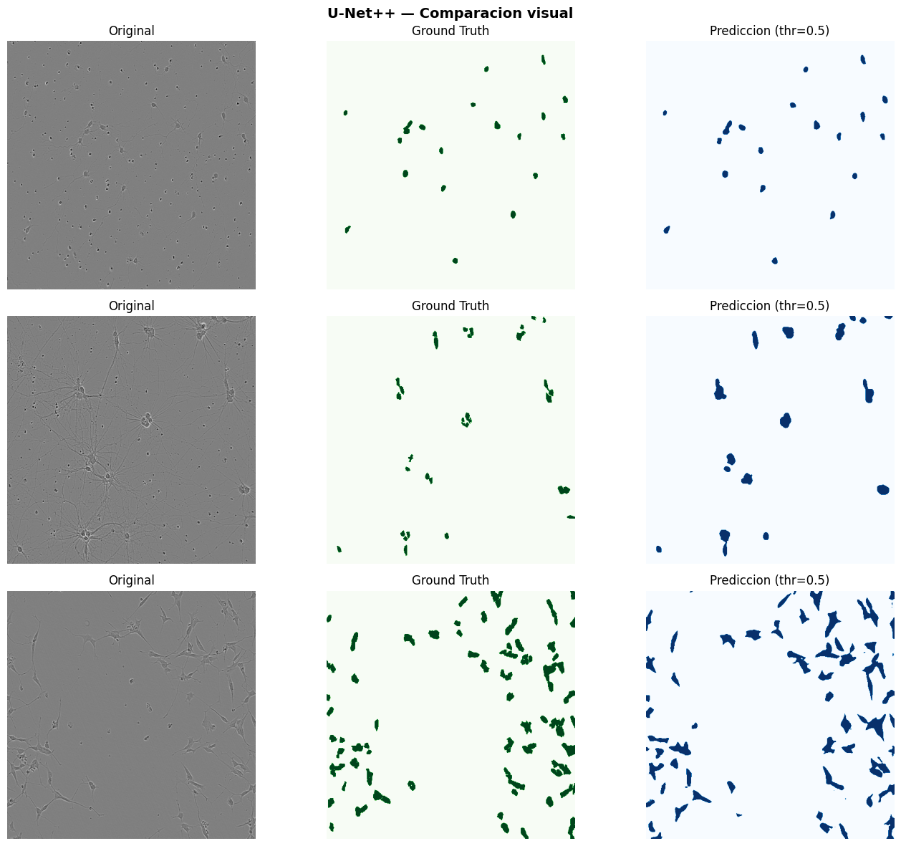
Guardado: evaluation_results\visual_u-net++.png
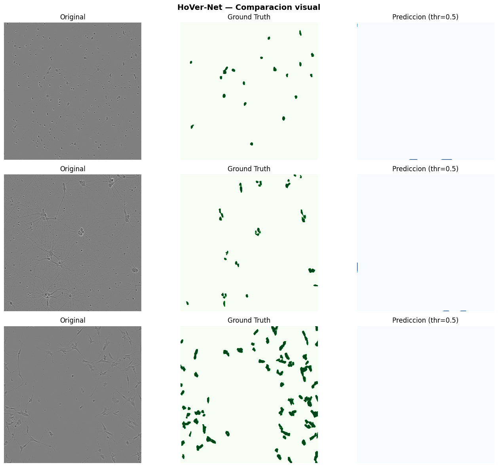
Guardado: evaluation_results\visual_hover-net.png
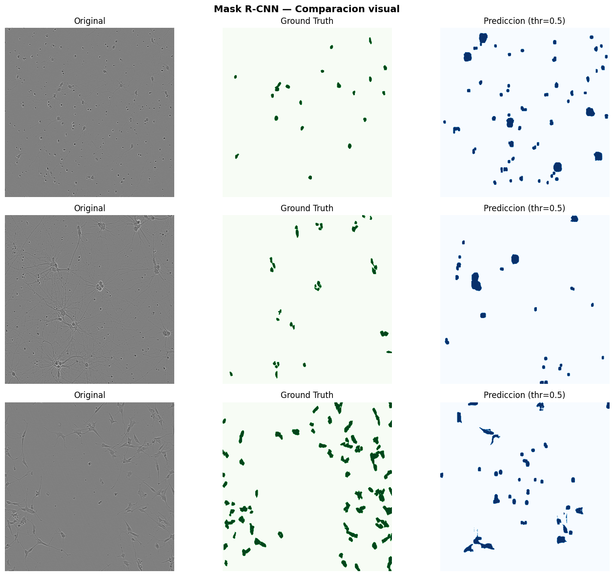
Guardado: evaluation_results\visual_mask_r-cnn.png
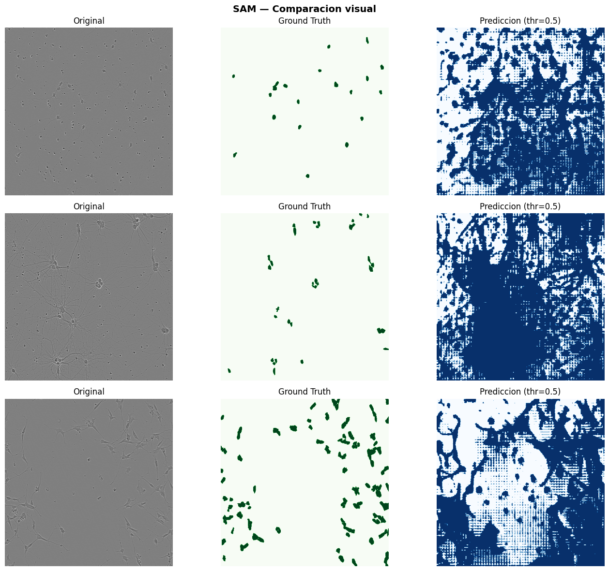
Guardado: evaluation_results\visual_sam.png
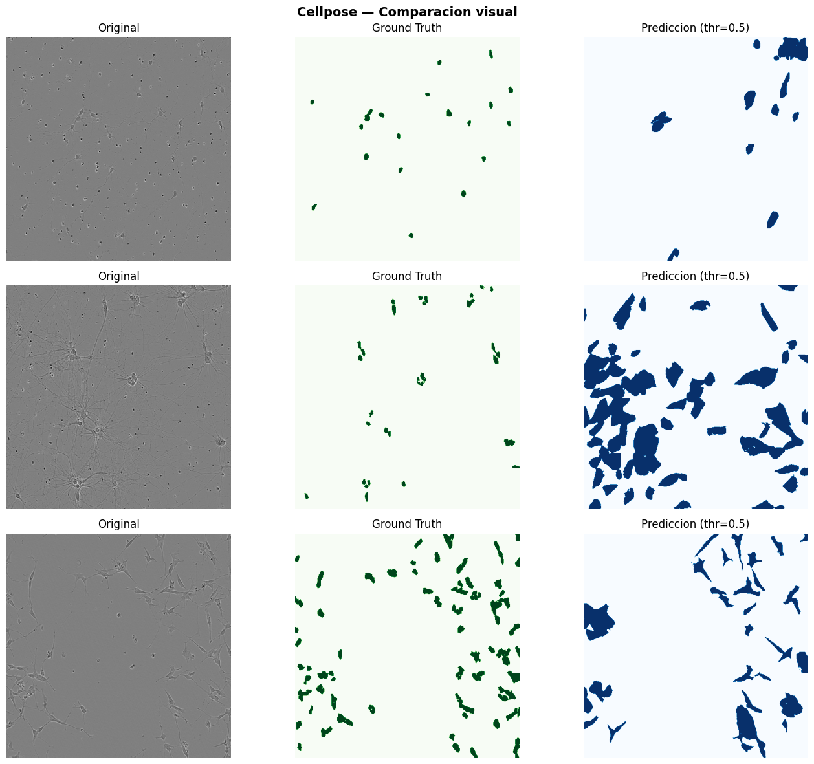
Guardado: evaluation_results\visual_cellpose.png
11. Mapas de error#
Rojo → Falsos Positivos (FP): predicho como célula, es fondo
Azul → Falsos Negativos (FN): es célula, no detectado
def plot_error_maps(model, model_name, df_sample, n=3,
is_hovernet=False, is_maskrcnn=False,
is_cellpose=False, is_sam=False,
threshold=0.5, device=DEVICE):
# FIX #1: sin @torch.inference_mode()
fig, axes = plt.subplots(n, 2, figsize=(12, 4*n))
fig.suptitle(f'{model_name} — Mapas de error\nRojo=FP | Azul=FN',
fontsize=13, fontweight='bold')
sample = df_sample.sample(n, random_state=SEED + 1)
# FIX #1: solo llamar .eval() si NO es Cellpose
if not is_cellpose:
model.eval()
for row_idx, (_, row) in enumerate(sample.iterrows()):
result = preprocess(row['ruta_imagen'], row['rles'],
is_train=False)
img_t = result['image'].unsqueeze(0).to(device)
gt_bin = (result['masks'].sum(0) > 0).numpy().astype(bool)
mean = np.array([0.485, 0.456, 0.406])
std = np.array([0.229, 0.224, 0.225])
img_np = np.clip(
result['image'].numpy().transpose(1, 2, 0) * std + mean, 0, 1
)
# ── Predicción por modelo ─────────────────────────────────────────
if is_maskrcnn:
with torch.inference_mode():
preds = model([img_t.squeeze(0)])
if len(preds[0]['masks']) == 0:
pred_bin = np.zeros_like(gt_bin)
else:
pred_bin = (
preds[0]['masks'][:, 0].cpu().max(0).values > threshold
).numpy().astype(bool)
elif is_hovernet:
with torch.inference_mode():
np_out, _, _ = model(img_t)
pred_bin = (
torch.sigmoid(np_out).squeeze().cpu() > threshold
).numpy().astype(bool)
elif is_cellpose:
img_cp = (img_np * 255).astype(np.uint8)
masks_cp, *_ = model.eval(
[img_cp],
channels = cp_hparams.get('chan', [0, 0]),
diameter = cp_hparams.get('diameter', None),
flow_threshold = cp_hparams.get('flow_threshold', 0.4),
cellprob_threshold = cp_hparams.get('cellprob_threshold', 0.0),
)
pred_bin = (masks_cp[0] > 0).astype(bool)
elif is_sam:
from segment_anything import SamPredictor
with torch.inference_mode():
predictor = SamPredictor(model)
predictor.set_image((img_np * 255).astype(np.uint8))
y, x = np.where(gt_bin)
if len(x) == 0 or len(y) == 0:
pred_bin = np.zeros_like(gt_bin)
else:
box = np.array([x.min(), y.min(), x.max(), y.max()])
masks_sam, _, _ = predictor.predict(
box=box[None, :], multimask_output=False
)
pred_bin = masks_sam[0].astype(bool)
else:
with torch.inference_mode():
out = model(img_t)
pred_bin = (
torch.sigmoid(out).squeeze().cpu() > threshold
).numpy().astype(bool)
# ── Mapa de error ─────────────────────────────────────────────────
fp = pred_bin & ~gt_bin
fn = ~pred_bin & gt_bin
tp = pred_bin & gt_bin
error_map = np.zeros((*gt_bin.shape, 3), dtype=np.float32)
error_map[tp] = [0.0, 0.8, 0.0]
error_map[fp] = [1.0, 0.0, 0.0]
error_map[fn] = [0.0, 0.0, 1.0]
overlay = img_np.copy()
mask_any = fp | fn | tp
overlay[mask_any] = 0.5 * overlay[mask_any] + 0.5 * error_map[mask_any]
fp_patch = mpatches.Patch(color='red', label=f'FP: {fp.sum()}')
fn_patch = mpatches.Patch(color='blue', label=f'FN: {fn.sum()}')
tp_patch = mpatches.Patch(color='green', label=f'TP: {tp.sum()}')
axes[row_idx, 0].imshow(img_np)
axes[row_idx, 0].set_title('Original')
axes[row_idx, 0].axis('off')
axes[row_idx, 1].imshow(overlay)
axes[row_idx, 1].legend(
handles=[fp_patch, fn_patch, tp_patch],
loc='upper right', fontsize=8
)
axes[row_idx, 1].set_title('Mapa de error')
axes[row_idx, 1].axis('off')
plt.tight_layout()
fname = OUTPUT_DIR / f'errors_{model_name.lower().replace(" ", "_")}.png'
plt.savefig(fname, dpi=150, bbox_inches='tight')
plt.show()
print(f'Guardado: {fname}')
# ─────────────────────────────────────────────
# ERROR MAPS
# ─────────────────────────────────────────────
if model_up:
plot_error_maps(
model_up,
'U-Net++',
df_img,
is_hovernet=False,
is_maskrcnn=False
)
if model_hv:
plot_error_maps(
model_hv,
'HoVer-Net',
df_img,
is_hovernet=True,
is_maskrcnn=False
)
if model_mrcnn:
plot_error_maps(
model_mrcnn,
'Mask R-CNN',
df_img,
is_maskrcnn=True
)
if model_sam:
plot_error_maps(
model_sam,
'SAM',
df_img,
is_sam=True
)
if model_cp:
plot_error_maps(
model_cp,
'Cellpose',
df_img,
is_cellpose=True
)
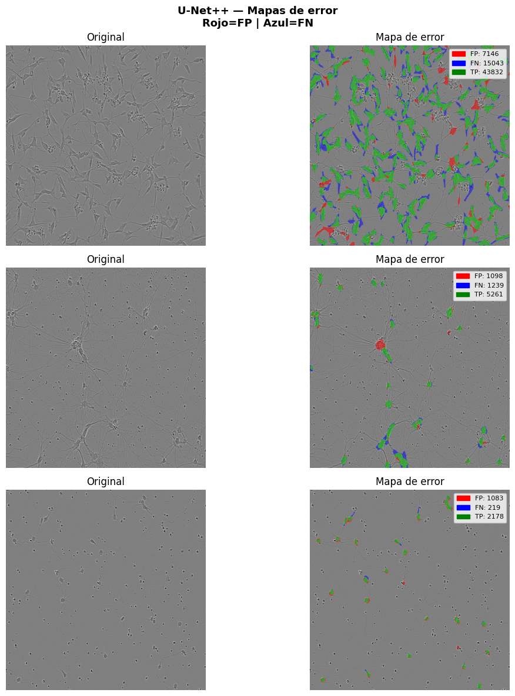
Guardado: evaluation_results\errors_u-net++.png
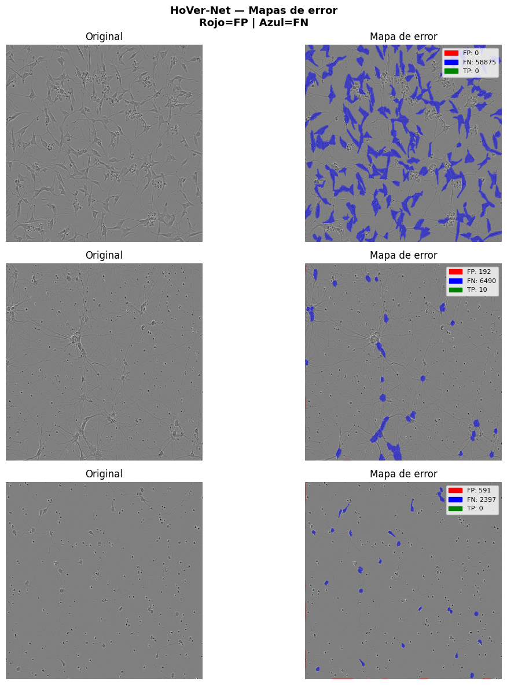
Guardado: evaluation_results\errors_hover-net.png
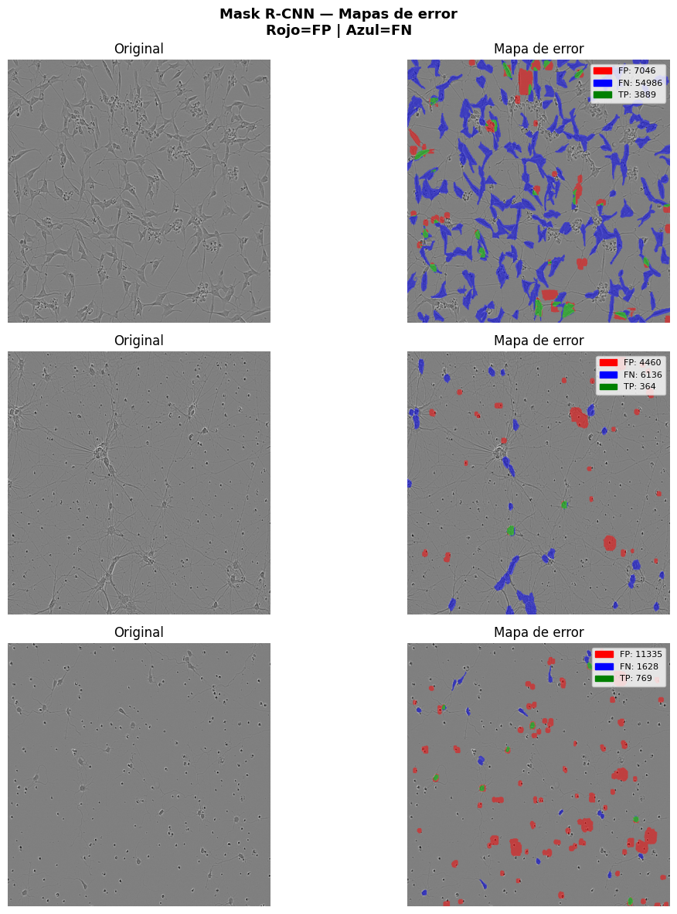
Guardado: evaluation_results\errors_mask_r-cnn.png
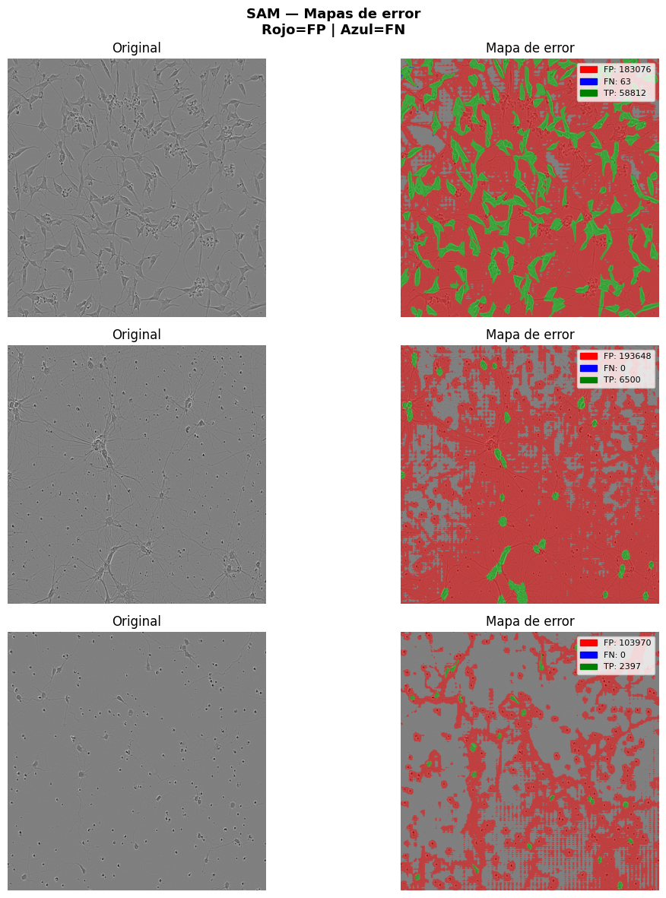
Guardado: evaluation_results\errors_sam.png
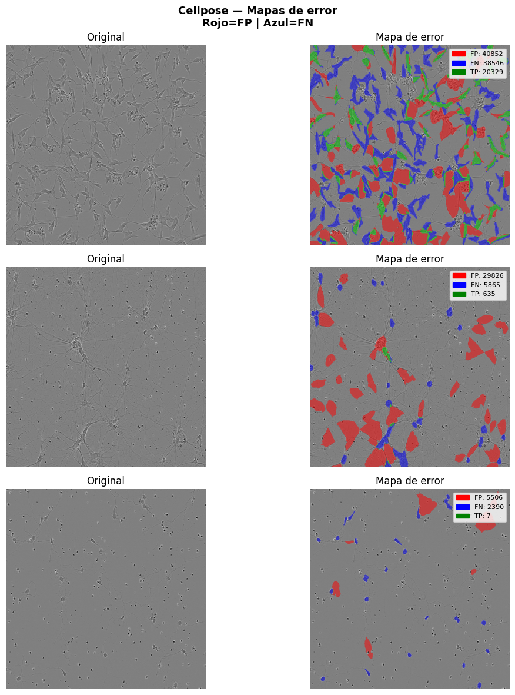
Guardado: evaluation_results\errors_cellpose.png
12. Curvas ROC y Precision-Recall#
COLORS = {
'unetpp' : '#2196F3',
'hovernet': '#FF5722',
'maskrcnn': '#4CAF50',
'cellpose': '#9C27B0',
'sam' : '#FF9800',
}
LABELS = {
'unetpp' : 'U-Net++',
'hovernet': 'HoVer-Net',
'maskrcnn': 'Mask R-CNN',
'cellpose': 'Cellpose',
'sam' : 'SAM',
}
fig, axes = plt.subplots(1, 2, figsize=(14, 6))
fig.suptitle('Curvas ROC y Precision-Recall — Test set',
fontsize=14, fontweight='bold')
for name in test_probs:
probs = test_probs[name]
trues = test_trues[name]
color = COLORS.get(name, 'gray')
label = LABELS.get(name, name)
# Sub-muestrear para velocidad (arrays muy grandes)
if len(probs) > 500_000:
idx = np.random.choice(len(probs), 500_000, replace=False)
probs_s = probs[idx]; trues_s = trues[idx]
else:
probs_s = probs; trues_s = trues
if len(np.unique(trues_s)) < 2:
continue
# ROC
fpr, tpr, _ = roc_curve(trues_s, probs_s)
roc_auc_val = auc(fpr, tpr)
axes[0].plot(fpr, tpr, color=color, lw=2,
label=f'{label} (AUC={roc_auc_val:.3f})')
# Precision-Recall
prec, rec, _ = precision_recall_curve(trues_s, probs_s)
pr_auc_val = auc(rec, prec)
axes[1].plot(rec, prec, color=color, lw=2,
label=f'{label} (AUC={pr_auc_val:.3f})')
# ROC
axes[0].plot([0,1],[0,1],'k--', lw=1, label='Random')
axes[0].set_xlabel('False Positive Rate')
axes[0].set_ylabel('True Positive Rate')
axes[0].set_title('Curva ROC')
axes[0].legend(loc='lower right', fontsize=9)
axes[0].grid(True, alpha=0.3)
# PR
axes[1].set_xlabel('Recall')
axes[1].set_ylabel('Precision')
axes[1].set_title('Curva Precision-Recall')
axes[1].legend(loc='upper right', fontsize=9)
axes[1].grid(True, alpha=0.3)
plt.tight_layout()
plt.savefig(OUTPUT_DIR / 'curvas_roc_pr.png', dpi=150, bbox_inches='tight')
plt.show()
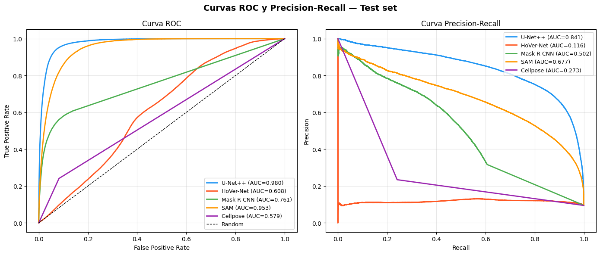
13. Boxplots de métricas por modelo#
METRIC_NAMES = ['iou','dice','precision','recall',
'auc','hausdorff','balanced_accuracy']
METRIC_LABELS = ['IoU','Dice','Precision','Recall',
'AUC','Hausdorff (px)','Balanced Acc']
# Construir DataFrame largo para seaborn
rows = []
for model_name, agg in test_results.items():
raw = agg.get('raw', [])
for r in raw:
for mk in METRIC_NAMES:
v = r.get(mk, np.nan)
if v == float('inf'): v = np.nan
rows.append({
'Modelo' : LABELS.get(model_name, model_name),
'Metrica': mk,
'Valor' : v
})
df_long = pd.DataFrame(rows)
fig, axes = plt.subplots(2, 4, figsize=(20, 10))
fig.suptitle('Distribucion de metricas por modelo — Test set',
fontsize=14, fontweight='bold')
axes_flat = axes.flatten()
palette = list(COLORS.values())[:len(df_long['Modelo'].unique())]
for i, (mk, ml) in enumerate(zip(METRIC_NAMES, METRIC_LABELS)):
ax = axes_flat[i]
sub = df_long[df_long['Metrica'] == mk]
sns.boxplot(data=sub, x='Modelo', y='Valor',
palette=palette, ax=ax, width=0.5)
ax.set_title(ml, fontweight='bold')
ax.set_xlabel('')
ax.tick_params(axis='x', rotation=25)
ax.grid(True, alpha=0.3, axis='y')
axes_flat[-1].set_visible(False) # 7 metricas en 8 subplots
plt.tight_layout()
plt.savefig(OUTPUT_DIR / 'boxplots_metricas.png', dpi=150, bbox_inches='tight')
plt.show()
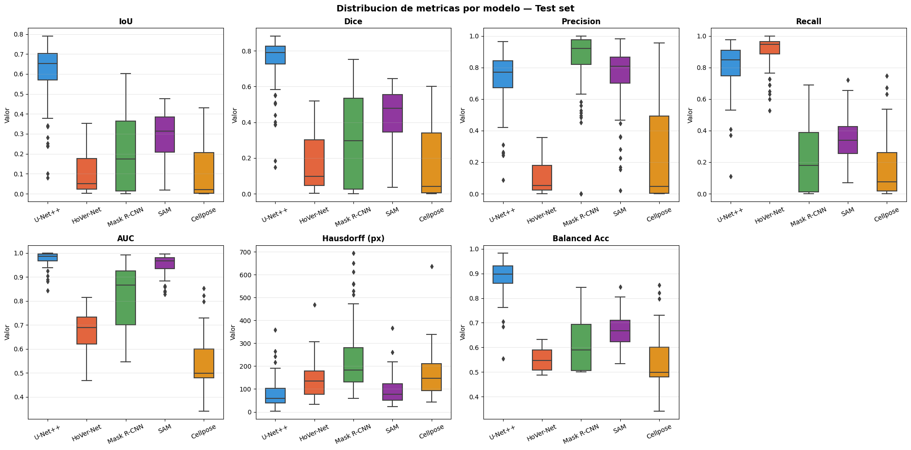
14. Histogramas de distribución de métricas#
fig, axes = plt.subplots(2, 4, figsize=(20, 9))
fig.suptitle('Histogramas de distribucion — Test set',
fontsize=14, fontweight='bold')
axes_flat = axes.flatten()
for i, (mk, ml) in enumerate(zip(METRIC_NAMES, METRIC_LABELS)):
ax = axes_flat[i]
for j, (model_name, agg) in enumerate(test_results.items()):
raw = agg.get('raw', [])
vals = [r.get(mk, np.nan) for r in raw
if r.get(mk, np.nan) != float('inf')
and not np.isnan(r.get(mk, np.nan))]
if not vals:
continue
ax.hist(vals, bins=30, alpha=0.5,
color=list(COLORS.values())[j],
label=LABELS.get(model_name, model_name),
density=True)
ax.set_title(ml, fontweight='bold')
ax.set_xlabel('Valor')
ax.set_ylabel('Densidad')
ax.legend(fontsize=7)
ax.grid(True, alpha=0.3)
axes_flat[-1].set_visible(False)
plt.tight_layout()
plt.savefig(OUTPUT_DIR / 'histogramas_metricas.png', dpi=150, bbox_inches='tight')
plt.show()
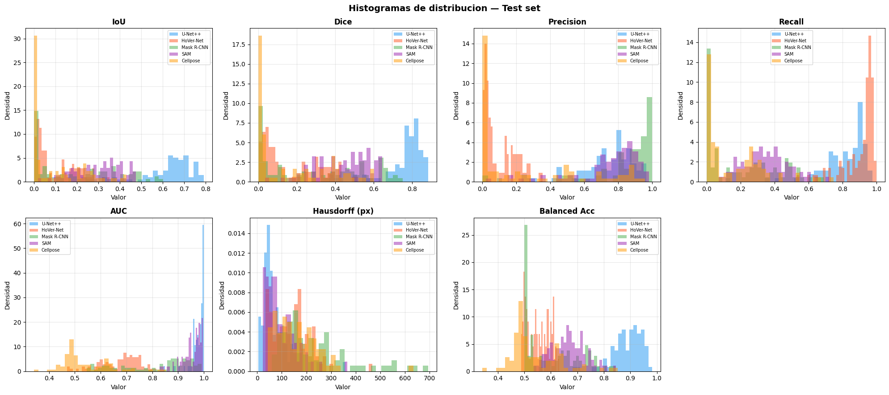
15. Tabla comparativa final#
# ── Test ─────────────────────────────────────────────────────
print('\n' + '='*70)
print('RESULTADOS FINALES — TEST SET')
print('='*70)
rows_test = []
for model_name, agg in test_results.items():
row = {'Modelo': LABELS.get(model_name, model_name)}
for mk in METRIC_NAMES:
if mk in agg:
row[mk] = f'{agg[mk]["mean"]:.4f}±{agg[mk]["std"]:.4f}'
rows_test.append(row)
df_test_summary = pd.DataFrame(rows_test).set_index('Modelo')
df_test_summary.columns = METRIC_LABELS
print(df_test_summary.to_string())
# ── K-Fold ───────────────────────────────────────────────────
print('\n' + '='*70)
print('RESULTADOS FINALES — K-FOLD (k=5)')
print('='*70)
rows_kf = []
all_kfold_models = [k.replace('_summary','')
for k in kfold_results if k.endswith('_summary')]
for model_name in all_kfold_models:
key = f'{model_name}_summary'
if key not in kfold_results:
continue
summ = kfold_results[key]
row = {'Modelo': LABELS.get(model_name, model_name)}
for mk in METRIC_NAMES:
if mk in summ:
row[mk] = f'{summ[mk]["mean"]:.4f}±{summ[mk]["std"]:.4f}'
rows_kf.append(row)
if rows_kf:
df_kf_summary = pd.DataFrame(rows_kf).set_index('Modelo')
df_kf_summary = df_kf_summary.reindex(columns=METRIC_NAMES)
print(df_kf_summary.to_string())
# ── Guardar JSON ─────────────────────────────────────────────
final_results = {
'test' : {
k: {mk: {'mean': float(v['mean']), 'std': float(v['std'])}
for mk, v in agg.items() if mk != 'raw'}
for k, agg in test_results.items()
},
'kfold' : {
k.replace('_summary',''): v
for k, v in kfold_results.items() if 'summary' in k
}
}
with open(OUTPUT_DIR / 'final_results.json', 'w') as f:
json.dump(final_results, f, indent=2, default=float)
print(f'\nResultados guardados en {OUTPUT_DIR}/final_results.json')
print('\nArchivos generados:')
for p in sorted(OUTPUT_DIR.iterdir()):
print(f' {p.name}')
======================================================================
RESULTADOS FINALES — TEST SET
======================================================================
IoU Dice Precision Recall AUC Hausdorff (px) Balanced Acc
Modelo
U-Net++ 0.6103±0.1473 0.7453±0.1400 0.7261±0.1724 0.8110±0.1366 0.9779±0.0267 79.5583±62.9064 0.8861±0.0645
HoVer-Net 0.0997±0.0917 0.1693±0.1444 0.1006±0.0928 0.9060±0.0955 0.6742±0.0767 138.3294±75.3747 0.5502±0.0418
Mask R-CNN 0.2022±0.1867 0.2973±0.2535 0.8552±0.1863 0.2160±0.2027 0.8165±0.1325 230.6393±140.0266 0.6076±0.1012
SAM 0.2972±0.1075 0.4471±0.1341 0.7458±0.1912 0.3465±0.1324 0.9521±0.0386 91.7753±57.7645 0.6670±0.0634
Cellpose 0.1054±0.1240 0.1698±0.1878 0.2575±0.3169 0.1590±0.1706 0.5375±0.0920 159.9363±88.5814 0.5375±0.0920
======================================================================
RESULTADOS FINALES — K-FOLD (k=5)
======================================================================
iou dice precision recall auc hausdorff balanced_accuracy
Modelo
U-Net++ 0.6472±0.0111 0.7792±0.0092 0.7689±0.0094 0.8188±0.0076 0.9803±0.0023 66.4481±3.0737 0.8914±0.0040
HoVer-Net 0.1106±0.0097 0.1818±0.0126 0.1118±0.0100 0.9071±0.0050 0.6695±0.0053 132.6290±3.4547 0.5477±0.0013
Mask R-CNN 0.2600±0.0104 0.3609±0.0095 0.8978±0.0107 0.2747±0.0112 0.8355±0.0049 215.8638±6.1423 0.6369±0.0055
SAM 0.3027±0.0071 0.4548±0.0086 0.7850±0.0194 0.3392±0.0085 0.9533±0.0031 85.9097±1.8529 0.6638±0.0041
Cellpose 0.1086±0.0049 0.1740±0.0060 0.2638±0.0054 0.1615±0.0066 0.5301±0.0056 151.8797±9.5944 0.5301±0.0056
Resultados guardados en evaluation_results/final_results.json
Archivos generados:
boxplots_metricas.png
curvas_roc_pr.png
errors_cellpose.png
errors_hover-net.png
errors_mask_r-cnn.png
errors_sam.png
errors_u-net++.png
final_results.json
histogramas_metricas.png
visual_cellpose.png
visual_hover-net.png
visual_mask_r-cnn.png
visual_sam.png
visual_u-net++.png